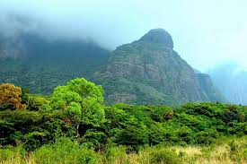

Kollam is a small and beautiful town situated on the Ashtamudi Lake , some 71 kms from Trivandrum , the capital city of Kerala . The town lies in the lower quarters, that is towards the south of the state. Kollam shares its eastern borders with the state of Tamil Nadu, the northern side is bounded by Pathanamthitta, the southern by Trivandrum , and towards the west lies the stretched out Lakshwadeep islands of the Arabian Sea . The place is connected with the rest of the state with continuous railway lines and roads. The town can be seen as sandwiched between Ashtamudi Lake and the Arabian Sea .
Must visit places in Kollam
